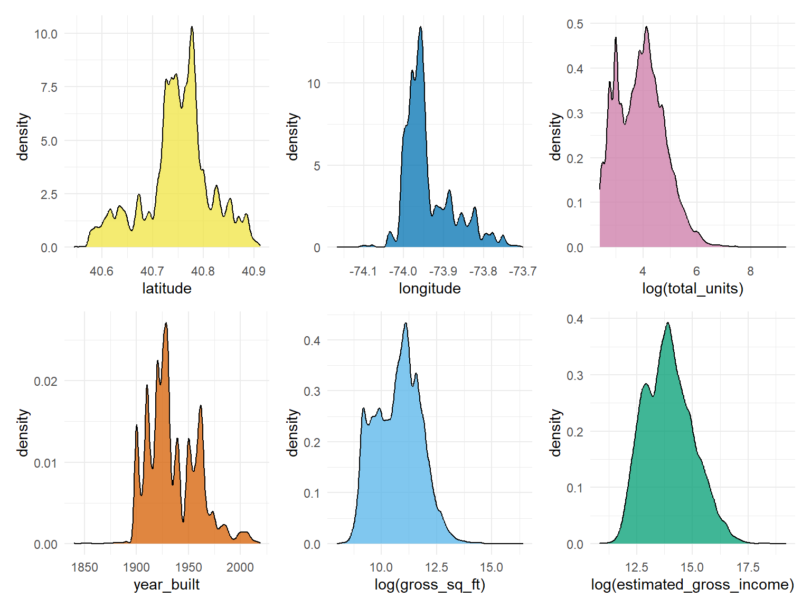
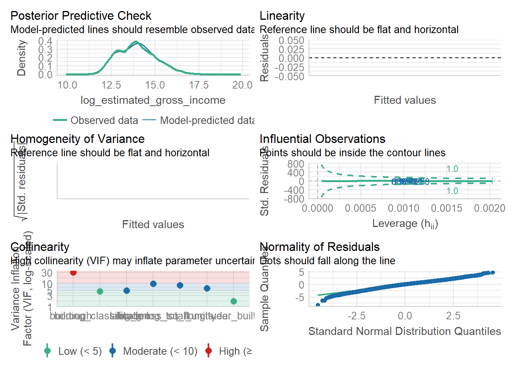

load('./data/cleaned_data.RData')
data_1 = transformed_rental_income %>%
separate(boro_block_lot, into = c("borough", "block", "lot"), sep = "-") %>%
filter(!building_classification %in% c('C8-WALK-UP','D2-ELEVATOR')) %>% # delete factors with too small quantity
mutate(borough = factor(borough),
neighborhood = factor(neighborhood),
building_classification = factor(building_classification))
#select(-block, -lot, -zoning, -boro_block, -block_id, -address)
# joined_data = data_1 %>% left_join(zoning, by = "bbl") %>% drop_na(zoning_district_1)
# dist_zo = transformed_rental_income %>%
# distinct(zoning)
#
# dist_ne = transformed_rental_income %>%
# distinct(neighborhood)
#
# dist_bc = transformed_rental_income %>%
# distinct(building_classification)
#
# bc = transformed_rental_income %>%
# select(building_classification) %>% Hmisc::describe()
#
# bc
# joined_data = joined_data %>%
# mutate(
# zoning = factor(zoning_district_1, levels = dist_zo$zoning_district_1, labels = dist_zo$zoning_district_1),
# neighborhood = factor(neighborhood, levels = dist_ne$neighborhood, labels = dist_ne$neighborhood),
# building_classification = factor(building_classification, levels = dist_bc$building_classification, labels = dist_bc$building_classification)
# )
p1 = data_1 %>%
ggplot(aes(x = latitude)) +
geom_density(aes(y = after_stat(density)),
fill = "#F0E442",
alpha = 0.75,
bins = 10)## Warning in geom_density(aes(y = after_stat(density)), fill = "#F0E442", :
## Ignoring unknown parameters: `bins`p2 = data_1 %>%
ggplot(aes(x = longitude)) +
geom_density(aes(y = after_stat(density)),
fill = "#0072B2",
alpha = 0.75,
bins = 10)## Warning in geom_density(aes(y = after_stat(density)), fill = "#0072B2", :
## Ignoring unknown parameters: `bins`p3 = data_1 %>%
ggplot(aes(x = log(total_units))) +
geom_density(aes(y = after_stat(density)),
fill = "#CC79A7",
alpha = 0.75,
bins = 10)## Warning in geom_density(aes(y = after_stat(density)), fill = "#CC79A7", :
## Ignoring unknown parameters: `bins`p4 = data_1 %>%
ggplot(aes(x = year_built)) +
geom_density(aes(y = after_stat(density)),
fill = "#D55E00",
alpha = 0.75,
bins = 10)## Warning in geom_density(aes(y = after_stat(density)), fill = "#D55E00", :
## Ignoring unknown parameters: `bins`p5 = data_1 %>%
ggplot(aes(x = log(gross_sq_ft))) +
geom_density(aes(y = after_stat(density)),
fill = "#56B4E9",
alpha = 0.75,
bins = 10)## Warning in geom_density(aes(y = after_stat(density)), fill = "#56B4E9", :
## Ignoring unknown parameters: `bins`p6 = data_1 %>%
ggplot(aes(x = log(estimated_gross_income))) +
geom_density(aes(y = after_stat(density)),
fill = "#009E73",
alpha = 0.75,
bins = 10)## Warning in geom_density(aes(y = after_stat(density)), fill = "#009E73", :
## Ignoring unknown parameters: `bins`# normality test
p1 + p2 + p3 + p4 + p5 + p6 
#### log_estimated_gross_income
data_egi = data_1 %>%
mutate(
log_total_units = log(total_units),
log_gross_sq_ft = log(gross_sq_ft),
log_estimated_gross_income = log(estimated_gross_income)
) %>%
select(latitude, longitude, building_classification, borough,
log_total_units, year_built, log_gross_sq_ft,
log_estimated_gross_income)
io_eg = lm(log_estimated_gross_income ~ 1, data = data_egi)
all_eg = lm(log_estimated_gross_income ~ ., data = data_egi)
egi_fit = step(io_eg, direction = "both", scope = formula(all_eg), trace = 0)
equatiomatic::extract_eq(egi_fit, use_coefs = TRUE)\[ \operatorname{\widehat{log\_estimated\_gross\_income}} = 4.04 + 0.96(\operatorname{\log\_gross\_sq\_ft}) - 0.54(\operatorname{borough}_{\operatorname{2}}) - 0.9(\operatorname{borough}_{\operatorname{3}}) - 0.51(\operatorname{borough}_{\operatorname{4}}) - 1.34(\operatorname{borough}_{\operatorname{5}}) - 2.39(\operatorname{latitude}) + 0.03(\operatorname{building\_classification}_{\operatorname{C4-WALK-UP}}) + 0.21(\operatorname{building\_classification}_{\operatorname{C5-WALK-UP}}) + 0.03(\operatorname{building\_classification}_{\operatorname{C6-WALK-UP}}) + 0(\operatorname{building\_classification}_{\operatorname{C7-WALK-UP}}) + 0.23(\operatorname{building\_classification}_{\operatorname{C9-WALK-UP}}) + 0.19(\operatorname{building\_classification}_{\operatorname{D0-ELEVATOR}}) + 0.01(\operatorname{building\_classification}_{\operatorname{D1-ELEVATOR}}) + 0.16(\operatorname{building\_classification}_{\operatorname{D3-ELEVATOR}}) + 0.11(\operatorname{building\_classification}_{\operatorname{D4-ELEVATOR}}) + 0.18(\operatorname{building\_classification}_{\operatorname{D5-ELEVATOR}}) + 0.3(\operatorname{building\_classification}_{\operatorname{D6-ELEVATOR}}) + 0.09(\operatorname{building\_classification}_{\operatorname{D7-ELEVATOR}}) + 0.25(\operatorname{building\_classification}_{\operatorname{D8-ELEVATOR}}) + 0.17(\operatorname{building\_classification}_{\operatorname{D9-ELEVATOR}}) - 1.3(\operatorname{longitude}) + 0(\operatorname{year\_built}) - 0.01(\operatorname{\log\_total\_units}) \]
summary(egi_fit)##
## Call:
## lm(formula = log_estimated_gross_income ~ log_gross_sq_ft + borough +
## latitude + building_classification + longitude + year_built +
## log_total_units, data = data_egi)
##
## Residuals:
## Min 1Q Median 3Q Max
## -2.38072 -0.17397 0.02015 0.19430 1.38319
##
## Coefficients:
## Estimate Std. Error t value Pr(>|t|)
## (Intercept) 4.042e+00 2.541e+00 1.591 0.1117
## log_gross_sq_ft 9.640e-01 2.134e-03 451.708 < 2e-16 ***
## borough2 -5.371e-01 3.508e-03 -153.109 < 2e-16 ***
## borough3 -8.975e-01 3.713e-03 -241.750 < 2e-16 ***
## borough4 -5.055e-01 4.324e-03 -116.892 < 2e-16 ***
## borough5 -1.336e+00 1.123e-02 -118.939 < 2e-16 ***
## latitude -2.386e+00 2.358e-02 -101.197 < 2e-16 ***
## building_classificationC4-WALK-UP 3.396e-02 4.410e-03 7.701 1.36e-14 ***
## building_classificationC5-WALK-UP 2.138e-01 7.182e-03 29.777 < 2e-16 ***
## building_classificationC6-WALK-UP 3.485e-02 3.248e-03 10.730 < 2e-16 ***
## building_classificationC7-WALK-UP -4.009e-04 4.102e-03 -0.098 0.9221
## building_classificationC9-WALK-UP 2.315e-01 5.497e-03 42.117 < 2e-16 ***
## building_classificationD0-ELEVATOR 1.920e-01 8.581e-03 22.378 < 2e-16 ***
## building_classificationD1-ELEVATOR 5.152e-03 2.856e-03 1.804 0.0712 .
## building_classificationD3-ELEVATOR 1.574e-01 3.685e-03 42.706 < 2e-16 ***
## building_classificationD4-ELEVATOR 1.067e-01 3.208e-03 33.266 < 2e-16 ***
## building_classificationD5-ELEVATOR 1.809e-01 6.276e-03 28.831 < 2e-16 ***
## building_classificationD6-ELEVATOR 3.025e-01 4.255e-03 71.094 < 2e-16 ***
## building_classificationD7-ELEVATOR 9.323e-02 4.010e-03 23.247 < 2e-16 ***
## building_classificationD8-ELEVATOR 2.530e-01 9.554e-03 26.483 < 2e-16 ***
## building_classificationD9-ELEVATOR 1.734e-01 4.550e-03 38.112 < 2e-16 ***
## longitude -1.298e+00 2.780e-02 -46.688 < 2e-16 ***
## year_built 5.660e-04 3.804e-05 14.882 < 2e-16 ***
## log_total_units -1.285e-02 2.316e-03 -5.547 2.90e-08 ***
## ---
## Signif. codes: 0 '***' 0.001 '**' 0.01 '*' 0.05 '.' 0.1 ' ' 1
##
## Residual standard error: 0.2886 on 170555 degrees of freedom
## Multiple R-squared: 0.9295, Adjusted R-squared: 0.9295
## F-statistic: 9.779e+04 on 23 and 170555 DF, p-value: < 2.2e-16performance::check_model(egi_fit)
## estimated_gross_income
data_egi_nl = data_1 %>%
mutate(
log_total_units = log(total_units),
log_gross_sq_ft = log(gross_sq_ft),
log_estimated_gross_income = log(estimated_gross_income)
)
# Hmisc::describe(data_egi_nl)
io_eg_nl = lm(estimated_gross_income ~ 1, data = data_egi_nl)
all_eg_nl = lm(estimated_gross_income ~ building_classification
+ borough + log_total_units + year_built + log_gross_sq_ft, data = data_egi_nl)
egi_fit_nl = step(io_eg_nl, direction = "both", scope = formula(all_eg_nl), trace = 0)
equatiomatic::extract_eq(egi_fit_nl, use_coefs = TRUE)\[ \operatorname{\widehat{estimated\_gross\_income}} = -39848051.94 + 2555409.65(\operatorname{\log\_gross\_sq\_ft}) - 52403.26(\operatorname{building\_classification}_{\operatorname{C4-WALK-UP}}) + 424496.3(\operatorname{building\_classification}_{\operatorname{C5-WALK-UP}}) - 359150.55(\operatorname{building\_classification}_{\operatorname{C6-WALK-UP}}) - 422820.57(\operatorname{building\_classification}_{\operatorname{C7-WALK-UP}}) - 1472734.12(\operatorname{building\_classification}_{\operatorname{C9-WALK-UP}}) - 1983186.29(\operatorname{building\_classification}_{\operatorname{D0-ELEVATOR}}) - 2763099.68(\operatorname{building\_classification}_{\operatorname{D1-ELEVATOR}}) - 2786984.62(\operatorname{building\_classification}_{\operatorname{D3-ELEVATOR}}) - 2203285.66(\operatorname{building\_classification}_{\operatorname{D4-ELEVATOR}}) - 1646438.72(\operatorname{building\_classification}_{\operatorname{D5-ELEVATOR}}) - 885754.6(\operatorname{building\_classification}_{\operatorname{D6-ELEVATOR}}) - 2644436.49(\operatorname{building\_classification}_{\operatorname{D7-ELEVATOR}}) + 604573.42(\operatorname{building\_classification}_{\operatorname{D8-ELEVATOR}}) - 1889853.07(\operatorname{building\_classification}_{\operatorname{D9-ELEVATOR}}) - 2258420.45(\operatorname{borough}_{\operatorname{2}}) - 1679702.6(\operatorname{borough}_{\operatorname{3}}) - 2258622.82(\operatorname{borough}_{\operatorname{4}}) - 1729013.51(\operatorname{borough}_{\operatorname{5}}) + 7921.17(\operatorname{year\_built}) + 469223.02(\operatorname{\log\_total\_units}) \]
summary(egi_fit_nl)##
## Call:
## lm(formula = estimated_gross_income ~ log_gross_sq_ft + building_classification +
## borough + year_built + log_total_units, data = data_egi_nl)
##
## Residuals:
## Min 1Q Median 3Q Max
## -7259199 -1046380 -183266 675252 201362191
##
## Coefficients:
## Estimate Std. Error t value Pr(>|t|)
## (Intercept) -3.985e+07 7.223e+05 -55.171 < 2e-16 ***
## log_gross_sq_ft 2.555e+06 2.100e+04 121.689 < 2e-16 ***
## building_classificationC4-WALK-UP -5.240e+04 4.346e+04 -1.206 0.228
## building_classificationC5-WALK-UP 4.245e+05 7.122e+04 5.960 2.52e-09 ***
## building_classificationC6-WALK-UP -3.592e+05 3.218e+04 -11.159 < 2e-16 ***
## building_classificationC7-WALK-UP -4.228e+05 4.049e+04 -10.441 < 2e-16 ***
## building_classificationC9-WALK-UP -1.473e+06 5.260e+04 -27.998 < 2e-16 ***
## building_classificationD0-ELEVATOR -1.983e+06 8.385e+04 -23.652 < 2e-16 ***
## building_classificationD1-ELEVATOR -2.763e+06 2.814e+04 -98.176 < 2e-16 ***
## building_classificationD3-ELEVATOR -2.787e+06 3.645e+04 -76.454 < 2e-16 ***
## building_classificationD4-ELEVATOR -2.203e+06 3.158e+04 -69.768 < 2e-16 ***
## building_classificationD5-ELEVATOR -1.646e+06 6.140e+04 -26.814 < 2e-16 ***
## building_classificationD6-ELEVATOR -8.858e+05 4.179e+04 -21.197 < 2e-16 ***
## building_classificationD7-ELEVATOR -2.644e+06 3.958e+04 -66.809 < 2e-16 ***
## building_classificationD8-ELEVATOR 6.046e+05 9.427e+04 6.413 1.43e-10 ***
## building_classificationD9-ELEVATOR -1.890e+06 4.487e+04 -42.121 < 2e-16 ***
## borough2 -2.258e+06 2.687e+04 -84.038 < 2e-16 ***
## borough3 -1.680e+06 2.123e+04 -79.124 < 2e-16 ***
## borough4 -2.259e+06 2.243e+04 -100.704 < 2e-16 ***
## borough5 -1.729e+06 1.008e+05 -17.155 < 2e-16 ***
## year_built 7.921e+03 3.738e+02 21.189 < 2e-16 ***
## log_total_units 4.692e+05 2.282e+04 20.564 < 2e-16 ***
## ---
## Signif. codes: 0 '***' 0.001 '**' 0.01 '*' 0.05 '.' 0.1 ' ' 1
##
## Residual standard error: 2868000 on 170557 degrees of freedom
## Multiple R-squared: 0.4838, Adjusted R-squared: 0.4838
## F-statistic: 7613 on 21 and 170557 DF, p-value: < 2.2e-16pred_df = data_egi_nl %>%
modelr::add_predictions(model = egi_fit_nl)
latitude = pred_df$latitude
longitude = pred_df$longitude
pred_Y = pred_df$pred
loess_val = loess(pred_Y ~ latitude + longitude)
loess_val## Call:
## loess(formula = pred_Y ~ latitude + longitude)
##
## Number of Observations: 170579
## Equivalent Number of Parameters: 10.38
## Residual Standard Error: 2677000?loess()## 打开httpd帮助服务器… 好了edit(loess)## function (formula, data, weights, subset, na.action, model = FALSE,
## span = 0.75, enp.target, degree = 2L, parametric = FALSE,
## drop.square = FALSE, normalize = TRUE, family = c("gaussian",
## "symmetric"), method = c("loess", "model.frame"), control = loess.control(...),
## ...)
## {
## family <- match.arg(family)
## method <- match.arg(method)
## mf <- match.call(expand.dots = FALSE)
## mf$model <- mf$span <- mf$enp.target <- mf$degree <- mf$parametric <- mf$drop.square <- mf$normalize <- mf$family <- mf$method <- mf$control <- mf$... <- NULL
## mf[[1L]] <- quote(stats::model.frame)
## mf <- eval(mf, parent.frame())
## if (match.arg(method) == "model.frame")
## return(mf)
## mt <- attr(mf, "terms")
## y <- model.response(mf, "numeric")
## w <- model.weights(mf) %||% rep_len(1, length(y))
## nmx <- as.character(attr(mt, "variables"))[-(1L:2)]
## x <- mf[, nmx, drop = FALSE]
## if (any(sapply(x, is.factor)))
## stop("predictors must all be numeric")
## x <- as.matrix(x)
## D <- ncol(x)
## nmx <- setNames(nm = colnames(x))
## drop.square <- match(nmx, nmx[drop.square], 0L) > 0L
## parametric <- match(nmx, nmx[parametric], 0L) > 0L
## if (!match(degree, 0L:2L, 0L))
## stop("'degree' must be 0, 1 or 2")
## iterations <- if (family == "gaussian")
## 1L
## else control$iterations
## if (!missing(enp.target))
## if (!missing(span))
## warning("both 'span' and 'enp.target' specified: 'span' will be used")
## else {
## tau <- switch(degree + 1L, 1, D + 1, (D + 1) * (D +
## 2)/2) - sum(drop.square)
## span <- 1.2 * tau/enp.target
## }
## if (!is.list(control) || !is.character(control$surface) ||
## !is.character(control$statistics) || !is.character(control$trace.hat) ||
## !is.numeric(control$cell) || !is.numeric(iterations))
## stop("invalid 'control' argument")
## fit <- simpleLoess(y, x, w, span, degree = degree, parametric = parametric,
## drop.square = drop.square, normalize = normalize, statistics = control$statistics,
## surface = control$surface, cell = control$cell, iterations = iterations,
## iterTrace = control$iterTrace, trace.hat = control$trace.hat)
## fit$call <- match.call()
## fit$terms <- mt
## fit$xnames <- nmx
## fit$x <- x
## fit$y <- y
## fit$weights <- w
## if (model)
## fit$model <- mf
## fit$na.action <- attr(mf, "na.action")
## fit
## }
## <environment: namespace:stats>